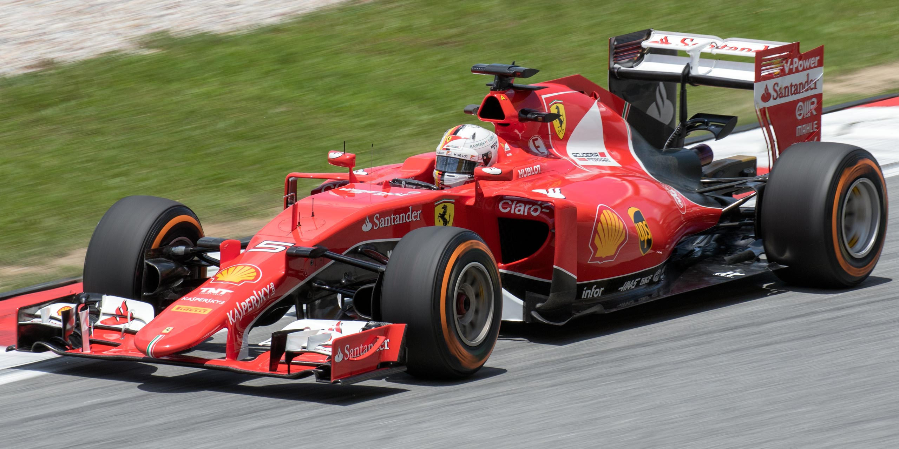
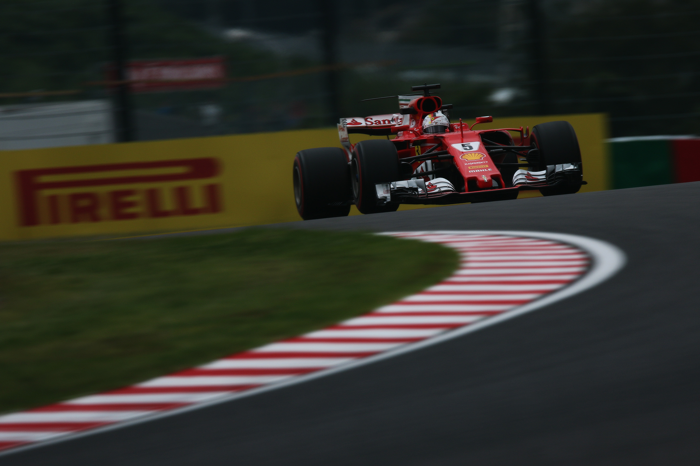
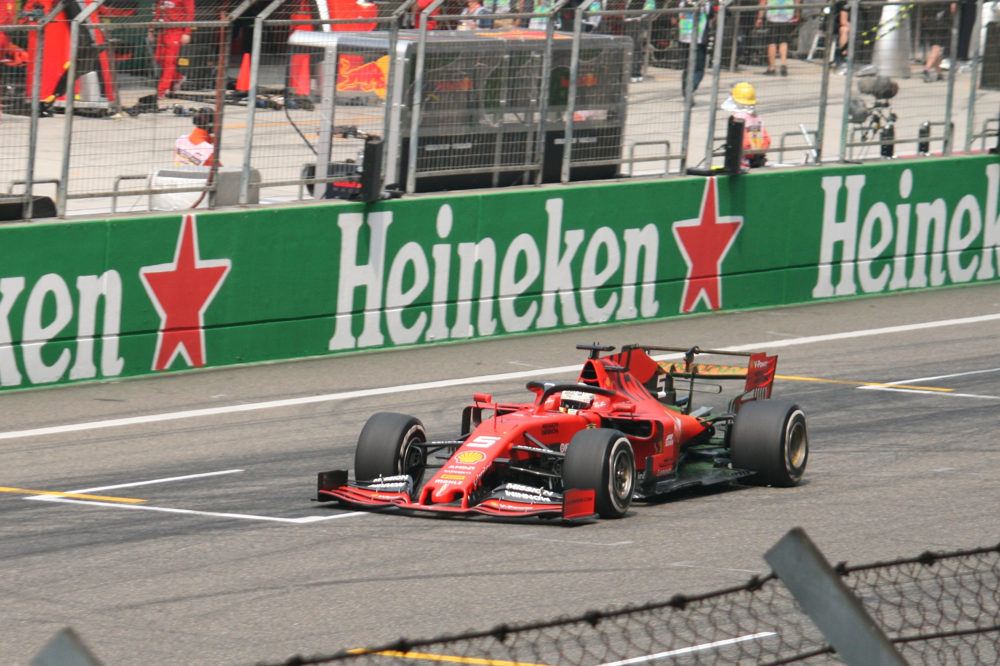

Ferrari (2015-2020)
2015–2016: Returning to the top step, a threat to Mercedes
Vettel made his Ferrari debut by finishing third in the Australian Grand Prix. He followed that up with winning the Malaysian Grand Prix, his first race victory for over a year and the first win for Ferrari for almost two years. After the race, an emotional Vettel paid tribute to Schumacher, saying that his hero's achievements with Ferrari made the first win all the more special.
He won the Hungarian Grand Prix to remain a championship contender after he started from third on the grid. He dedicated his victory to the driver Jules Bianchi, who died the week prior from injuries sustained in 2014. At the halfway point of the season, Vettel was 42 points behind championship leader and Mercedes driver Hamilton. Vettel was in third place in Belgium when his right rear blew at high speed on the penultimate lap, likely ending any title chances given Hamilton's win. After the race, he ranted about the 'unacceptable' and 'unsafe' Pirelli tyres that could have caused him serious injury.
Vettel came home second in the Italian Grand Prix, his first race with Ferrari at the team's home soil. He then took his first pole with the team at the Singapore Grand Prix, Ferrari's first pole for three years. Vettel went on to win the race, and with Hamilton retiring, he closed to within 49 points with seven races remaining. Vettel ended the season in third place, however, with three wins and 13 podiums; he declared the season as a 'miracle'.
After a third-place finish at the 2016 Australian Grand Prix, Vettel's participation in Bahrain ended without starting as his car broke down on the formation lap. At the Chinese Grand Prix, Vettel collided with teammate Räikkönen on the first lap, but both were able to continue. He blamed Red Bull driver Daniil Kvyat for the collision, labelling him a "madman" and described his overtaking manoeuvre as "suicidal". At the Russian Grand Prix, Vettel retired on the first lap after two consecutive collisions with Kvyat. At the Mexican Grand Prix, Vettel attempted to overtake Red Bull driver Max Verstappen, but after Verstappen ran off the track and rejoined ahead of him, Vettel verbally attacked him and race director Charlie Whiting, for which he later apologised. Vettel then blocked Red Bull's Ricciardo by moving in the braking zone, and was given a ten-second penalty and two points on his licence. Although he achieved seven podium finishes during the season, Vettel did not win any races in 2016.
2017–2018: Championship challenges ending in disappointment
His third season at Ferrari started with victory in Australia, his first in 18 months. The early form continued the following races, winning in Bahrain and Monaco, and finishing second in China, Russia and Spain. In Russia, Vettel took his first pole position in 18 months and with Räikkönen alongside him, Ferrari had their first front row lock out since the 2008 French Grand Prix. Vettel's lead at the top of the standings increased to 25 points after the Monaco Grand Prix, Ferrari's first victory at the circuit since Schumacher won there in 2001.
In Azerbaijan, Vettel collided into the rear of race leader Hamilton under the safety car, accusing Hamilton of brake testing him. Moments later, Vettel pulled alongside and hit his Mercedes as they prepared for a restart, for which he received a ten-second stop-go penalty. The FIA investigated the Vettel-Hamilton incident further, but Vettel received no punishment. Vettel took full responsibility, issuing a public apology and committing to devote personal time over the next 12 months to educational activities across a variety of FIA championships and events.
Vettel's championship lead was cut to only a single point in Great Britain, as he suffered a puncture on the penultimate lap and dropped to seventh place. Vettel started from pole in Hungary, and maintained the lead. He overcame steering issues and held on for victory, which gave him a 14-point lead over Hamilton. Mercedes dominated after the summer break and Vettel lost the championship lead at the Italian Grand Prix, which was followed by a first-lap retirement in Singapore after collision with Räikkönen and Verstappen. It was the first time in Formula One history that both Ferraris retired from the first lap of a Grand Prix. His title hopes were dealt another blow in Malaysia, as he started last following a turbo problem in qualifying. He finished in fourth place, but crashed with Williams' Lance Stroll on the cool-down lap; neither would be penalised. More reliability issues befell Ferrari in Japan as Vettel retired due to a spark plug failure. In Mexico, Vettel became the fourth driver in Formula One history to claim 50 pole positions. Verstappen took the lead from Vettel at the start, before Vettel collided with Hamilton, after which Hamilton won his fourth title. For the first time in his career, Vettel failed to win the World Drivers' Championship having led it at some stage during a season.
The 2018 season was dubbed the "Fight For Five" by the media, as for the first time in Formula One history, two quadruple world champions lined up at the start of a season. For the second consecutive year, Vettel began the season with victory in Australia, after he took the lead while pitting under the virtual safety car. It was his 100th podium, while he also became only the third man in Formula One history to have led 3,000 laps. In Bahrain, Vettel maintained the lead from pole through the first round of pit stops and held off Mercedes' Valtteri Bottas despite being on old soft tyres to take a record fourth victory at the circuit. At the Chinese Grand Prix, he was hit by Verstappen in the latter stages of the race, which caused both to spin. Vettel limped home in eighth place, with his championship lead reduced to nine points. For the first time since 2013, Vettel took three consecutive pole positions as he qualified in first place in Azerbaijan. It was the 23rd different Grand Prix at which he had taken pole position, equalling Hamilton's record.
At the Canadian Grand Prix, Vettel won for the third time in 2018 and for the 50th time in his career, becoming only the fourth man to reach a half-century of wins. The following race in France, Vettel lost the championship lead following a collision with Bottas. He bounced back in Great Britain, after he passed Bottas in the last laps to take victory. Vettel led his home race until he slid off the track and hit the wall in the latter stages as rain started to fall, as he had clipped the sausage curb a few laps before, breaking a part of his front wing, causing understeer and loss of downforce; he won in Belgium, however, in which he passed Hamilton for the race victory. Contact on the opening lap with Hamilton in Italy saw Vettel damage his front wing and drop to the back of the field, but he recovered to cross the finishing line in fourth place. It left Vettel 30 points behind the Mercedes driver with seven races left. His championship hopes were dealt a further blow as Ferrari's upgrades introduced at the Singapore Grand Prix proved to be unsuccessful, making a step backwards on car development; Ferrari suffered a dip of form until the United States Grand Prix, where they reverted to their old package and successfully rediscovered their form. Vettel claimed his first ever podium in Mexico but the World Drivers' Championship went to Hamilton for a second consecutive year. Although Mercedes had been the more consistent and better team, fans and pundits criticised Vettel for making too many mistakes during the season.
2019–2020: Difficult ending at Ferrari
After showing impressive pace throughout pre-season testing in Barcelona, Vettel and his new teammate Charles Leclerc headed to Australia with many pundits believing they had the car to beat for the 2019 season. The opening weekend proved to be difficult, however, as Vettel qualified some seven tenths off pole position in third and finished the race in fourth place. Third-place finishes in China and Azerbaijan followed, as Mercedes continued to dominate. Vettel took pole position in Canada; his first pole in 17 races. Midway through the race, a snap of oversteer caused him to run wide onto the grass. Vettel received a five-second time penalty from the stewards, who believed he had returned to the track "in an unsafe manner and forced [Hamilton] off track". Vettel crossed the line in first place but lost his victory as a result of the penalty. After the race, he swapped the number one and two signs in front of Hamilton's Mercedes and the empty spot that was supposed for his own car, as Vettel parked his car at the start of the pit entry. At the German Grand Prix, Vettel was unable to qualify after a turbo issue, which meant he would start in last place. During a race with mixed weather conditions, Vettel climbed up to second place. In Italy, Vettel spun at the Ascari chicane and when he re-entered the track, he made contact with Racing Point's Stroll. Vettel received a 10-second stop-go penalty and finished in 13th place. At the Singapore Grand Prix, Vettel won on a circuit Ferrari were expected to struggle at. For the first time, Vettel had won five times at the same track. The following race, in Russia, Vettel went from third place on the grid to first place in the first corner. However, radio transmissions suggested that the team wanted to swap their drivers, but with Vettel the quicker driver, he remained in front. Vettel retired soon after with a MGU-K problem.
Vettel took pole position in Japan, but an abrupt start off the line caused him to momentarily stop before getting away, which allowed Bottas to take the lead; Vettel was not penalized for his jump start. After running in third at the Brazilian Grand Prix for the majority of the race, a safety car allowed Red Bull's Alexander Albon and an aggressive Leclerc to overtake him. He tried to pass his teammate immediately but the two Ferraris collided, resulting in another retirement for Vettel. He finished fifth in the World Drivers' Championship, and was outscored by a teammate for only the second time across a season.
Ferrari later announced they would not extend Vettel's contract beyond the 2020 season. Team principal Mattia Binotto explained there was "no specific reason" for the decision, though both parties noted it was an amicable agreement. The season was disrupted by the COVID-19 pandemic as the first ten races of the original calendar were either rescheduled, postponed or cancelled altogether. Ferrari discovered problems on their car following pre-season testing, forcing them to make a major redesign.
The SF1000 lacked pace as Vettel finished the season's opening race in Austria in 10th place. During the weekend, he was also given a warning for breaching the FIA's COVID-19 protocols after he was seen mixing with members of his former team Red Bull. The following race, at the Styrian Grand Prix, Vettel retired on the opening lap with rear wing damage following a collision with Leclerc. He ended the season in a disappointing 13th place in the Drivers' standings, with a third place in Turkey as his best result. Ferrari only finished sixth in the Constructors' standings, their worst result since 1980, while Vettel's total of 33 points was the lowest in a full campaign in his Formula One career.